Architecture¶
This document describes the internal architecture of cysox: its layered design, class hierarchy, memory ownership model, and key data flows. It is intended for contributors and users who want to understand how the library works under the hood.
Diagrams are generated from d2 source files in
docs/assets/diagrams/. To regenerate after editing:
Layer Overview¶
cysox is organized into three layers. User code interacts with the high-level Python API, which delegates to Cython bindings, which call into libsox's C library.

| Layer | Language | Key Files | Role |
|---|---|---|---|
| High-Level API | Python | audio.py, fx/, onset.pyx |
Pythonic interface, auto-initialization, typed effects |
| Low-Level Bindings | Cython | sox.pyx |
1:1 wrapper around libsox C structs and functions |
| C Libraries | C | libsox, KissFFT (vendored) | Audio I/O, signal processing, FFT |
Design principle: The high-level API never exposes libsox pointers or requires manual resource management. The low-level API provides full control for power users who need it.
Class Hierarchy¶

Effects System (Python)¶
The cysox.fx module defines four abstract base classes:
| Base Class | Purpose | How it resolves |
|---|---|---|
Effect |
Wraps a single sox effect | name + to_args() -> sox CLI args |
CompositeEffect |
Combines multiple effects into a preset | effects property returns a list of Effect instances, recursively expanded |
PythonEffect |
Custom DSP in Python/NumPy | process() operates on sample arrays (experimental) |
CEffect |
Custom C-level effects | register() with sox (experimental) |
All 27 concrete effects (Volume, Reverb, Trim, etc.) inherit from Effect and
implement two methods:
class Volume(Effect):
@property
def name(self) -> str:
return "vol" # sox effect name
def to_args(self) -> List[str]:
return [f"{self.db}dB"] # sox argument list
All 53 presets (Telephone, DrumPunch, Cathedral, etc.) inherit from
CompositeEffect and return a list of constituent effects:
class Telephone(CompositeEffect):
@property
def effects(self):
return [HighPass(frequency=300), LowPass(frequency=3400), Volume(db=-3)]
When convert() receives a CompositeEffect, it calls _expand_effects() to
recursively flatten the tree into a list of base effects before building the
sox chain.
Low-Level Bindings (Cython)¶
Each Cython class wraps a libsox C struct via a typed pointer:
| Class | C Struct | Key Role |
|---|---|---|
Format |
sox_format_t |
File handle for reading/writing audio |
EffectsChain |
sox_effects_chain_t |
Pipeline of effects to process audio |
Effect |
sox_effect_t |
Single effect instance in a chain |
EffectHandler |
sox_effect_handler_t |
Describes an effect type (static) |
SignalInfo |
sox_signalinfo_t |
Sample rate, channels, precision, length |
EncodingInfo |
sox_encodinginfo_t |
Encoding format, bits per sample |
SoxRuntime |
(pure Python) | Singleton managing lifecycle and callbacks |
Onset Detection (Cython + KissFFT)¶
The onset module is implemented in Cython with nogil inner loops for
performance. It uses vendored KissFFT for spectral analysis rather than
libsox's effects pipeline. The module provides two entry points:
detect(path, ...)-- reads audio viasox.Format, then delegates to:detect_onsets(samples, rate, channels, ...)-- pure computation on raw samples
Five detection algorithms are implemented: HFC, Flux, Energy, Complex, and Superflux. See the Onset Detection API for details.
Memory Ownership Model¶
cysox uses an owner flag pattern for all Cython wrapper classes. Every object wrapping a C pointer tracks whether it owns (allocated) the memory or merely borrows a reference into a parent structure.

The Owner Flag Pattern¶
cdef class SignalInfo:
cdef sox_signalinfo_t* ptr
cdef bint owner # True = we allocated, we free
def __cinit__(self):
self.ptr = NULL
self.owner = False
def __dealloc__(self):
if self.ptr is not NULL and self.owner:
free(self.ptr)
self.ptr = NULL
Three Ownership Categories¶
1. Owning (owner=True) -- The object allocated the memory and is responsible
for freeing it in __dealloc__:
| Class | Allocator | Deallocator |
|---|---|---|
SignalInfo |
calloc(1, sizeof(...)) |
free(ptr.mult); free(ptr) |
EncodingInfo |
calloc(1, sizeof(...)) |
free(ptr) |
OutOfBand |
calloc(1, sizeof(...)) |
sox_delete_comments(); free(ptr) |
Format |
sox_open_read/write() |
sox_close() |
Effect |
sox_create_effect() |
free(ptr) |
EffectsChain |
sox_create_effects_chain() |
sox_delete_effects_chain() |
2. Borrowed (owner=False) -- The pointer references memory inside a parent object. No deallocation. Valid only while the parent is alive:
format.signal-> points to&format_ptr->signal(insidesox_format_t)format.encoding-> points to&format_ptr->encodingchain.effects[i]-> points into the chain's effects table
Warning
Borrowed references become dangling after the parent is closed or freed.
Always use Format as a context manager to ensure borrowed SignalInfo
and EncodingInfo references remain valid.
3. Static (owner=False, never freed) -- Pointers to libsox's internal static data that persists for the program lifetime:
EffectHandlerfromsox_find_effect()Globalsfromsox_get_globals()
The from_ptr() Factory¶
Every Cython class provides a from_ptr() static factory method:
@staticmethod
cdef SignalInfo from_ptr(sox_signalinfo_t* ptr, bint owner=False):
cdef SignalInfo wrapper = SignalInfo.__new__(SignalInfo)
wrapper.ptr = ptr
wrapper.owner = owner
return wrapper
This is used internally to create borrowed wrappers (e.g., Format.signal
returns SignalInfo.from_ptr(&self.ptr.signal, owner=False)).
Allocation Safety¶
All struct allocations use calloc (not malloc) to zero-initialize memory.
This prevents use-after-free bugs where a __dealloc__ method checks a field
that was never initialized (e.g., OutOfBand.comments containing garbage that
looks truthy).
Data Flow: convert()¶
The convert() function is the core of the high-level API. It bridges typed
Python effect objects to libsox's C effects chain.

Step-by-step¶
-
Initialization:
SoxRuntime.ensure_init()callssox_init()once (double-checked locking for thread safety). -
Open files: Create
Formatobjects for input (read) and output (write). The output signal is derived from the input, with optional overrides for sample rate, channels, or bit depth. -
Build effects chain: Create an
EffectsChainwith the input and output encodings. -
Add input effect: The special
"input"effect reads samples from the inputFormat. -
Expand and add user effects:
_expand_effects()recursively flattensCompositeEffectinstances- For each base effect: look up the sox handler by
effect.name, create asox.Effect, set options viaeffect.to_args(), add to chain - Signal tracking: After each effect, check if the output signal
changed (e.g.,
PitchorSpeedalter the sample rate). If so, updatecurrent_signalfor the next effect in the chain.
-
Implicit conversions: If the final signal doesn't match the target sample rate or channel count, automatically insert
rateand/orchannelseffects. -
Add output effect: The special
"output"effect writes samples to the outputFormat. -
Flow:
chain.flow_effects()pushes all samples through the pipeline. Ifon_progresswas provided, a callback is registered withSoxRuntimeand invoked from C via the GIL. -
Cleanup: Close both
Formatobjects in afinallyblock.
SoxRuntime Singleton¶
SoxRuntime consolidates all global state into a single thread-safe singleton:
Responsibilities¶
-
Lifecycle management:
ensure_init()initializes libsox exactly once.force_quit()is called by an atexit handler at process exit. The publicquit()function is a no-op (libsox crashes if re-initialized after quit). -
Callback storage: When
flow_effects(callback=...)is called, the callback is stored in_flow_callbackskeyed by the chain's pointer address. A C wrapper function acquires the GIL, looks up the callback, and invokes it. -
Exception bridge: Python exceptions in callbacks cannot propagate through C code. Instead, they are caught and stored in
_last_callback_exception. Afterflow_effects()returns, the high-level API checks for stored exceptions and re-raises them.
Thread Safety¶
- Double-checked locking in
ensure_init()prevents race conditions under free-threaded Python (PEP 703). - Callback registration/lookup is lock-protected.
- Each
Format,EffectsChain, andEffectinstance should be used from a single thread. Separate instances can be used concurrently.
Onset Detection Pipeline¶
The onset detection module operates independently from the sox effects chain:
-
File I/O:
detect()opens the file viasox.Format, reads all samples into memory as int32 values, then closes the file. -
Mono mixdown: Multi-channel audio is averaged to mono and converted to double-precision float.
-
Windowed FFT analysis: Samples are processed in overlapping frames (default: 1024 samples, 256 hop). Each frame is windowed (Hann) and transformed via KissFFT's real-valued FFT.
-
Detection function: One of five algorithms computes an onset detection function (ODF) value per frame:
- HFC:
sum(k^2 * |X[k]|^2)-- emphasizes high-frequency transients - Flux: Half-wave rectified spectral difference from previous frame
- Energy: RMS energy per frame
- Complex: Phase + magnitude deviation from prediction
- Superflux: Mel-scaled flux with max-filter vibrato suppression
- HFC:
-
Adaptive thresholding: A median filter computes a local baseline. Peaks must exceed
sensitivity * local_medianand the globalthreshold. -
Peak picking: Local maxima satisfying both thresholds and
min_spacingconstraints are reported as onset times in seconds.
All inner loops run with nogil for performance. Memory is managed via
explicit malloc/free with cleanup in a finally block.